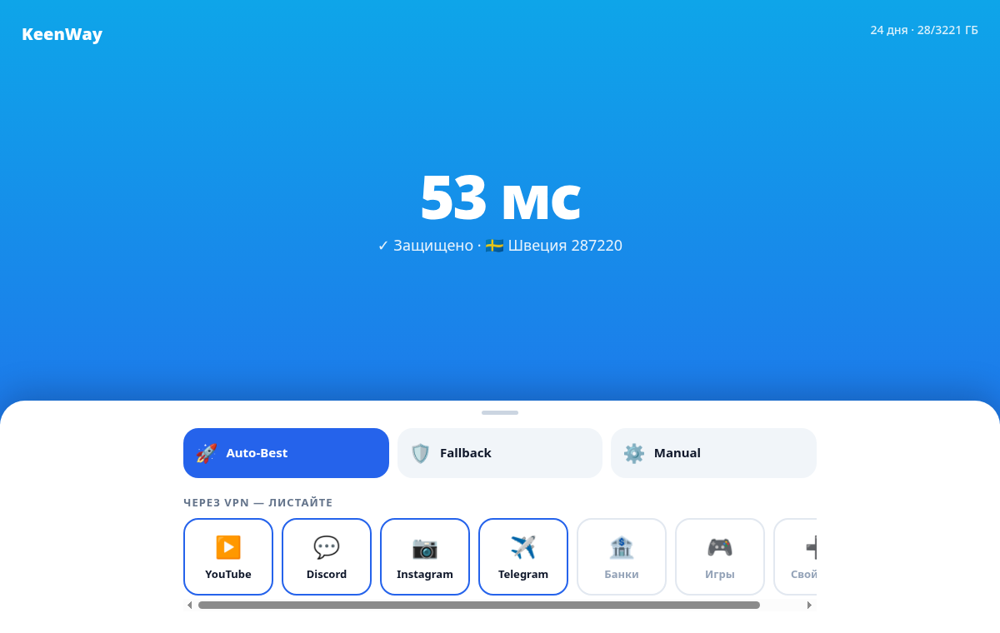
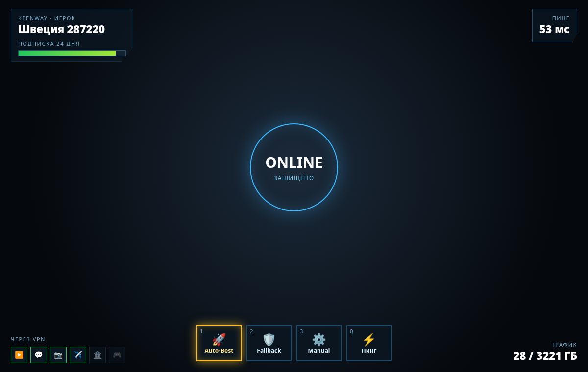
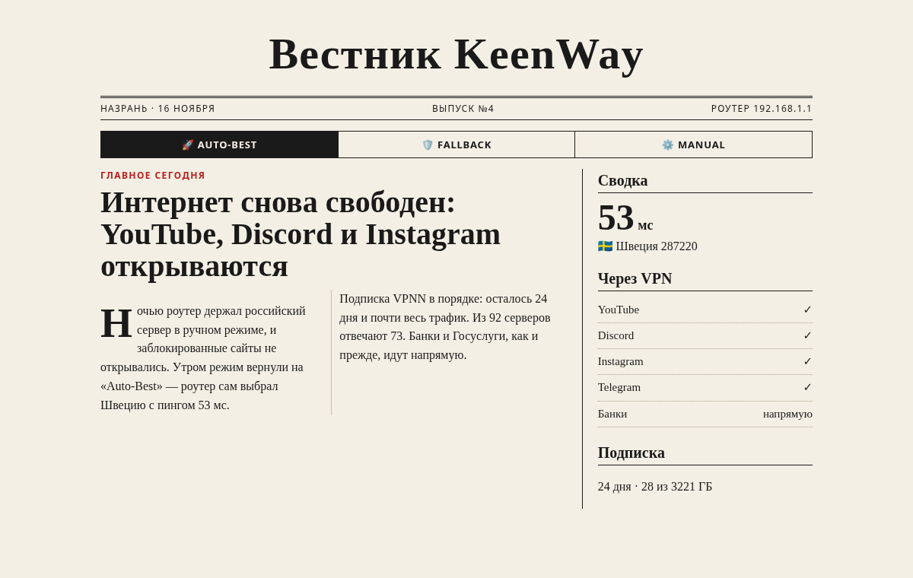
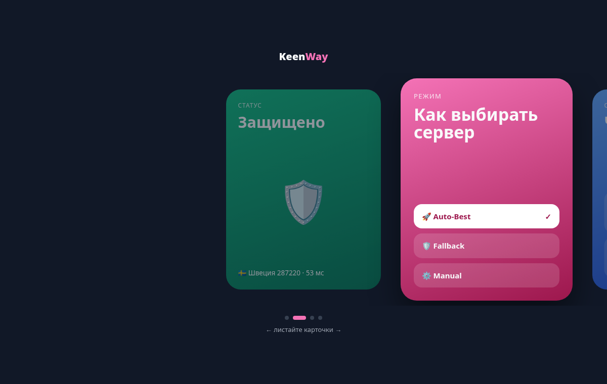

KeenWay — 10 новых дизайнов

1. Круговое меню
Статус в центре, режимы вокруг него, сервисы на внешнем кольце.

2. Чат с роутером
Переписка как в мессенджере, режимы — быстрые ответы над полем ввода.

3. Пульт с ручкой
Экранчик, поворотная ручка режимов, лампочки сервисов.

4. Нижняя шторка
Огромный пинг сверху, всё управление в шторке снизу.

5. Игровой HUD
Данные по углам, режимы — панель навыков с клавишами 1-2-3.

6. Таблица
Серверы таблицей, режимы — вкладки, статус в нижней строке.

7. Газета
Заголовок дня, колонки текста, режимы — выпуски.

8. Раскрывающиеся разделы
Складные плашки, режимы радиокнопками справа.

9. Меню справа
Режимы слева столбиком, меню справа, статус строкой внизу.

10. Карусель карточек
Каждая функция — большая карточка, листаются вбок.